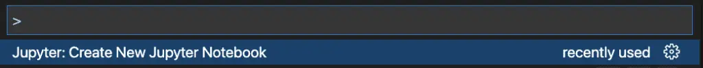
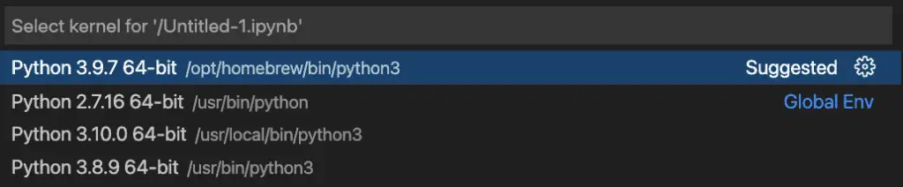

Installing Pyenv on a Mac (A Setup Guide With Usage Tips)
Pyenv is a tool that lets you install and manage multiple Python environments (hence “pyenv”) on the same machine. If you’re like me and do a lot of work in Python, so you may have a few python versions already on your machine. Fortunately for you, I’m a messy guy too, so I’ll walk you through both the installation of Pyenv into an existing environment, and some words of caution you might consider before cleaning up the mess. Don’t worry if you have a brand-new Mac, though – pyenv works even better if installed into a clean environment!
If you’re working alone, this means you can have different versions of Python running, and you can easily switch between them. Perhaps you want to try out some new Python features, but you have an existing project that you don’t want to upgrade yet. Or perhaps, like me, you just like things neat and tidy. Let me briefly share how I come to be writing about Pyenv today.
My Pyenv Story - A Cleaner Personal Workflow
Because I spend a lot of time in Visual Studio Code and often like to write drafts of Python articles in Jupyter notebook format, I naturally have Microsoft’s excellent Jupyter Notebook extension installed. When I use this plugin, I’ve noticed that it always prompts me for a Python environment when I create a new notebook. I do this using Cmd-Shift-P and searching for Jupyter:

Creating a new notebook using VS Code’s Jupyter plugin.
If I create a new notebook this way and try to run my first cell, I get prompted for a Python environment:

Selecting a Python environment in VS Code
Of course, that’s not the end of the world – I can hit enter here and all is well, but it did serve as a reminder that I have a bit of a mess going on. I have some aliases that allow me to use “python” instead of “python3” as the default Terminal command, for example.
# Python 3
alias python=/Library/Frameworks/Python.framework/Versions/3.10/bin/python3
alias python2=/usr/bin/python
alias pip=/Library/Frameworks/Python.framework/Versions/3.10/bin/pip3
Since I wanted to start writing several posts here about various Python Tools, and since I had a bit of a mess to clean up, I though Pyenv would be a good place to start.
Using Pyenv on a Team
Having pyenv becomes even more important if you’re working with a team. In this case, it can be used to document and enforce the Python version that the team uses in the git repository (more on this later in the article).
Let’s say you’re on a team is still chugging along on some early Python, let’s say 3.2.6, or even worse, 2.1.3 As much as you may feel that such a team should bite the bullet and upgrade, already, this may involve a serious regression testing effort that the team is not willing to take on. Meantime, you want to play around like the rest of us cool kids with new features like assignment expressions (which made Guido ride off in the sunset), or positional only function arguments. But you want to do this in such a way that when you’re serving time in the prison yard with your colleagues on Python 2.1.3, you don’t shoot yourself in the foot by accidentally coding some Python 3 goodness in the wrong codebase.
Enough Motivation – Let’s Begin the Installation
To start installing pyenv on Mac, let’s follow the recommended steps and begin by using Homebrew.
brew update
brew install pyenv
In my case, brew came back with the following for the brew update command, so I went ahead and did the recommended upgrade before installing pyenv.
brew upgrade
brew install pyenv
The documentation suggests we then continue with the Basic GitHub Checkout instructions, skipping item 1 because we used brew. I found these instructions to be pretty generic, and they probably work fine, but I know that later versions of macOS like the one I’m on use zsh as the default instead of bash. If that’s the case for you, you may see files in your home directory if you type the following code:
ls ~/.zprofile
# or
ls ~/.zshrc
Because this was my case, I substituted the code below (or download) to configure my shell environment:
echo 'export PYENV_ROOT="$HOME/.pyenv"' >> ~/.zprofile
echo 'export PATH="$PYENV_ROOT/bin:$PATH"' >> ~/.zprofile
echo 'eval "$(pyenv init --path)"' >> ~/.zprofile
echo 'eval "$(pyenv init -)"' >> ~/.zprofile
Once this is done, to make sure the file is loaded, run “source ~/.zprofile”, or to show you’re one of the cool kids using zsh, you can use “. ~/.zprofile”.
Getting Started With Pyenv
At this point, we have pyenv installed, but it doesn’t yet manage any versions for us. If we ask pyenv to tell us what versions it knows about, it only reports that it knows about “system”:
pyenv versions
* system (set by /Users/johnlockwood/.pyenv/version)
At the time I write this, my own latest local version is 3.10.0 (as we saw above when discussing Jupyter notebook), but 3.10.1 is already out, so let’s let Python manage that version for us. I’m going to do this in my 100 Days of Python project, to see if we can make it the default for that project.
cd 100-days-of-python
pyenv install 3.10.1
If I type “python –version” at this point, however, I still get “Python 3.10.0”. What gives?
The first problem is the aliases we showed above. After manually removing those from the configuration file where they’re defined, I’ll also make sure they’re gone from the current terminal as follows:
unalias python
unalias python2
unalias pip
Setting a Python Version Using Pyenv
With the aliases removed, “python –version” now refers to version 2.7.16, the default non-3 Mac version.
python --version
Python 2.7.16
Oh, the horror! Don’t worry, though, we’re going to fix that now.
Remember, I wanted to make the 3.10.1 version the default for my 100 days of code repository, so at the root of that repository, I can simply type “python local 3.10.1”. Now I get the right result in the 100-days-of-code directory, or any subfolders:
python --version
Python 3.10.1
cd day-01
python --version
Python 3.10.1
How did pyenv accomplish this? If you look in the root using “ls -a”, where we called “pyenv local”, we see a file “.python_version”. Showing its contents:
cat .python-version
3.10.1
By committing that “.python_version” file to our source repository, we enable other developers on the team to lock down the version the team has agreed to work on, but still play be able to work on other repositories that might be on a different version.
Setting a Global Default
Of course, outside that folder, we still have the system’s default Python 2.7 version showing when we type “python –version”. We can fix that by making our 3.10.1 the default global version for pyenv. Now we’re free to work anywhere on our machine and have a fresh new version of Python handy. (OK, if you’re reading this from your flying car on Mars and Python is on version 52.3.9, 3.10.1 won’t look fresh and new to you – but you get the idea). In any case, here’s how we do it:
pyenv global 3.10.1
cd /
python --version
Python 3.10.1
Using Pyenv With Pip
Once I had version 3.10.1 installed, I wanted to make sure that pip was using the right version, and running “pip –version” showed me it wasn’t. To fix this, I simply followed the pip installation instructions, and ran them with my “pyenv” version of Python active.
$ python -m ensurepip --upgrade
Following this step, “pip –version” showed that pip was associated with the 3.10.1 version of Python, as I expected.
More Basic Pyenv Commands
Before getting into whether you should do additional cleanup once you have pyenv installed and managing your python versions, let’s look at several more useful commands and features of pyenv.
First, let’s consider what Pyenv does if it finds a version file that you don’t have installed. In a directory that doesn’t already have a “.python-version” file, for example, you can try this:
echo "3.4" > .python-version
python
pyenv: version `3.4' is not installed (set by <directory>/.python-version)
At this point, if you type “pyenv install”, it will list the versions compatible with the local “.python-version” file – there will be several. Note, however, that installing many earlier versions of Python onto a Mac with an ARM-64 processor will likely not work. Support for ARM-64 processors was added in Python 3.9.
Nesting pyenv versions works fine. For example, from a folder that had a “.python-version” file for 3.10.1 in it, I was able to do:
cd subfolder
pyenv install 3.9.1
pyenv local 3.9.1
python --version
> Python 3.9.1
pyenv version
3.9.1 (set by /<folder-path>/.python-version
We’ve already seen the use of pyenv global and local commands to set global and local versions, respectively. Without a version specifier, these commands display version information. This is useful for displaying whether there’s a local version file somewhere int the folder hierarchy, and what the global version is set to.
These are a just few of the most useful commands I’ve found to get you started. For more things you can do, you can get to pyenv help by typing “pyenv help” or “pyenv help
Should You Do Other “Cleanup” Steps?
Once I had Pyenv available to install and manage any new versions of Python want, to try out or might need for a project, I wanted to see if there was anything I could remove. You may be able to pare back some things on your machine, but I would urge caution. In my case, for example, most of the cleanup tasks I envisioned at the start of the article turned out to be things I was better off deferring. For example:
I thought removing the latest 3.10.0 install could wait, since I had installed that from an official Python Mac package, meaning it was now the default 3.x version on my machine. Best to leave that one alone.
The version that brew had installed, 3.9, turned out to be a dependency of Amazon’s command line tool, the awscli. I decided that figuring out how to do an unsupported installation of the awscli was not worth the trouble.
The original prompting for a Python environment we saw when using Jupyter notebooks in VS Code was a feature, not a bug. This was because I didn’t have a virtual environment configured yet for my 100-days-of-python project (globally). That’s normally the first thing I do in a new project, but since 100 days of python is meant to be “a bunch of new projects”, I hadn’t tackled it yet.
Going forward, we’ll have more to share about many Python tools. We’ll be digging deeply into other tools such as pip, pipenv, poetry, conda, and docker that offer various solutions for managing isolated python environments, and we’ll definitely want to explore how they interact with Visual Studio Code as part of that discussion.